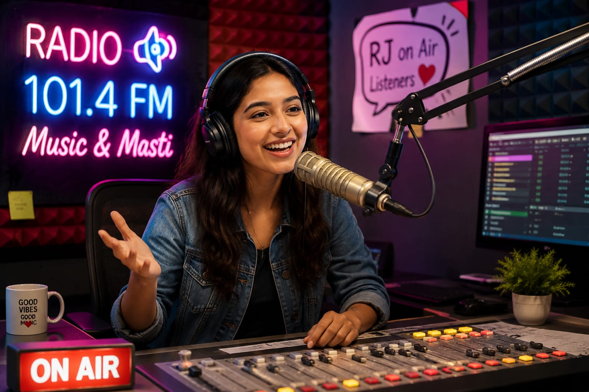

- You might have heard or listened to FM radio shows
- Someone is speaking, entertaining, and connecting with listeners through their voice.
- These professionals are called Radio Jockeys.
- 👉 In simple words: Radio Jockeys host radio shows, speak with listeners, play music, and entertain people through audio programs.
Radio Jockey
What Do They Do?

🎓 How to Become a Radio Jockey
The courses to pursue this career are given below :
These beginner-level courses help students improve speaking confidence, voice clarity, anchoring skills, communication, and microphone handling.
Certificate in Radio Jockeying and Anchoring
Duration: 1 – 3 Months
Eligibility: Class 10 Pass
Entrance Exam: Direct Admission / Vocal Audition
Certificate in voice Culture & Presentation
Duration: 1-2 months
Eligibility: Open to all
Entrance Exam: Merit-Based / Voice Audition
Note: Most beginner radio jockey and anchoring courses after 10th focus on practical speaking skills and usually do not require national-level entrance exams.
These degree programs help students develop communication skills, radio presentation, storytelling, interviewing, media production, and live broadcasting techniques.
Diploma in Radio Jockeying (DRJ)
Duration: 6 months- 1 Year
Eligibility: 12th Pass (Any Stream)
Entrance Exam: Institute Entrance Test / Merit-Based Admission / Audition
Certificate in Radio Production & Jockeying
Duration: 2 - 3 months
Eligibility: 12th Pass (Any Stream)
Entrance Exam: Merit-Based Admission
📝 Exam Details
(Click on the exam name to see full details)
Institute Entrance Test Merit-Based Admission AuditionNote: Most radio jockey and media communication degree programs focus on practical speaking, broadcasting, and media production skills along with classroom learning.
These advanced programs help students master radio production, live broadcasting, media management, podcasting, interviewing, and professional audio presentation.
PG Diploma in Radio Jockeying
Duration: 1 Year
Eligibility: Graduation (Any Stream)
Entrance Exam: University Entrance Test
Note: Advanced radio and mass communication programs focus heavily on practical studio training, audio production, live hosting, scripting, and broadcasting experience.
These online radio jockey and broadcasting programs help students improve speaking confidence, storytelling, radio presentation, public speaking, podcasting, and audio production skills.
Introduction to Radio Jockeying
Duration: 4 – 6 Weeks
Eligibility: Open to All
Provider: Coursera
Radio Hosting and Public Speaking Masterclass
Duration: 2 – 10 Hours
Eligibility: Open to All
Provider: Udemy
Spontaneous Storytelling and Performance
Duration: 5+ Hours
Eligibility: Open to All
Provider: MasterClass Platform
Creative Audio Production and Podcasting
Duration: 1 – 3 Hours
Eligibility: Open to All
Provider: Skillshare
Professional Radio Jockeying Certification
Duration: 3 Months
Eligibility: Open to All
Provider: SWAYAM / Private Media Academies
Note: Most online radio jockey and podcasting courses focus on practical communication and live speaking skills rather than written exams.
Note:
(Age limits, marks, and admission process may vary depending on the college or state. These courses are available in many colleges and universities across India. You can choose colleges based on your location, budget, and entrance exams.)
🏛️ Top Colleges & Institutes for Radio Jockeys in India
(Tap on a college to view details)
STEP 1
Imagine you are working as a Radio Jockey.
STEP 2
One evening, you get ready to host a live radio show.
STEP 3
You prepare script, plan fun conversations, and speak live with listeners and callers.
STEP 4
People listen to your voice during their travel, work, and daily routines.
STEP 5
If this excites you, this career may suit you.
Where do Radio Jockeys work? (Job Roles + Growth)
Radio Jockeys work in : Radio Stations, FM channels, Online radio platforms, Podcasting platforms, and other Audio and digital media organisations.
🔵 Beginner Roles
Radio Show Intern
(After Certificate in Radio Jockeying and Anchoring / Introduction to Radio Jockeying)
Screens caller phone lines, researches topics, and helps manage studio guests.
Podcast Producer
(After Diploma in Radio Production and Jockeying / Creative Audio Production and Podcasting)
Records, edits, and uploads podcast episodes for online platforms.
🔵 Mid-Level Roles
Evening / Night Radio Jockey
(After BA in Journalism and Mass Communication / Radio Hosting Masterclass)
Hosts regular music and talk shows, reads ads, and chats with callers live on air.
Station Producer
(After Bachelor of Media Studies / Professional Radio Jockeying Certification)
Plans radio show schedules, writes scripts, and manages daily station content.
🟣 Advanced Roles
Primetime Radio Jockey (Morning Show Host)
(After PG Diploma in Radio Broadcasting / Spontaneous Storytelling Masterclass)
Hosts the live show and entertains listeners with comedy, news, and discussions.
Programming Head
(After MA in Mass Communication)
Leads the radio station’s creative direction and manages all on-air programs and RJs.
International Radio Stations
They hire RJ for music shows, entertainment programs, and live broadcasts.
Podcast & Audio Platforms
They need hosts and storytellers for global podcasts and audio content.
Digital Streaming Platforms
They hire presenters for online radio, music streaming, and entertainment shows.
Live Events & Entertainment Shows
They hire radio jockeys to host concerts, celebrity interviews, and public events.
(Click Yes or No for each question)
1. Do you enjoy talking and entertaining people?
2. Do you enjoy speaking confidently in front of others?
3. When you listen to radio shows, have you ever thought, “I want to do this”?
4. Imagine you are working as a Radio Jockey for a radio station. You host a morning show where you talk to listeners, play songs, and share interesting stories. You also take calls from listeners and have fun conversations with them. Finally, people listening to the radio enjoy the show. Do you like this type of work?
5. The radio station you are working is hosting a special show where a popular singer is visiting the studio. You are the Radio Jockey hosting the show. You talk to the singer, ask questions, and keep the conversation interesting for the listeners. Finally, listeners enjoy the conversation and get to know more about the singer. Does this type of work interest you?